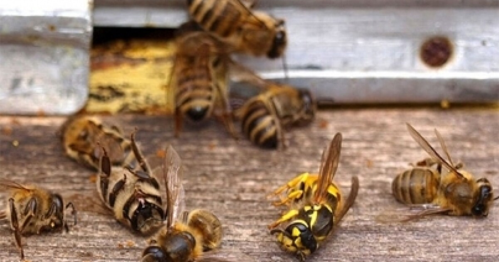

Suarez Flores Tania Abigail
Seriously threatened.
Why are bees disappearing?
bees are disappearing due to different factors
- climate change
- land use change
- increase in monocultures
- excessive use of pesticides
- accumulation of micro plastics
- intensive agricultural practices
There has been a decrease in the abundance and number of bee species due to human actions.
